Vector operations
Multiplying a vector by a scalar: If we multiply a vector v by a scalar λ, we get a new vector whose magnitude is the product of |v| by the absolute value of λ. Its direction is the direction of v is λ is positive but the opposite direction if λ is negative. In particular the symbol
−v
represent the vector with opposite sense as v.
Parallelogram Rule for Vector Addition. If u and v are vectors that are positioned so that their initial points coincide, then the two vectors form adjacent sides of a parallelogram, and the sum u + v = w is the vector represented by the arrow from the common point of u and v to the opposite vertex of the parallelogram
Triangle Rule for Vector Addition. If u and v are vectors that are positioned so the initial point of v is at the terminal point of u, then the sum u + v is represented by the arrow from the initial point of u to the terminal point of v.
Si verifica immediatamente che la somma di vettori gode della proprietà commutativa, cioè u + v = v + u, come si può vedere nella figura seguente
Un altro metodo è quello del parallelogramma, volendo sommare due vettori a e b, si disegna un parallelogramma costituito dai lati a e b; il vettore somma a+b sarà dato dalla diagonale del parallelogramma.
Subtracting Vectors
Vector subtraction makes use of the definition of the negative of a vector. We define u − v to be u + (−v). Thus vector subtraction is really a special case of vector addition. The geometric construction for subtracting two vectors is shown in the following figure.
The vector addition has the following properties: For v, w, u ∈ ℝn,
v + w = w + v,
v + (w + u) = (v + w) + u,
there exists a zero vector 0, with the property that v + 0 = v
every vector v has an additive inverse −v, with the property that v + (−v) = 0.
You should recognize these as the same defining properties possessed by addition in a ring (see Chapter 6) or the properties of the operation in an abelian group (see Chapter 19). Here, the additive identity is the zero vector 0. In ℝ3 , 0 = (0, 0, 0) and if v = (v1, v2, v3), then −v = (v1, v2, v3). The other arithmetic operation in the algebra of vectors is scalar multiplication, in which vectors are multiplied by scalars to give other vectors. Here, our scalars come from the field ℝ. Scalar multiplication has the following properties: For r, s ∈ ℝ and v, w ∈ ℝn,
(r + s)v = rv + sv,
(rs)v = r(sv),
r(v + w) = rv + rw,
1v = v.
Note that the 1 in the last property is the scalar 1.